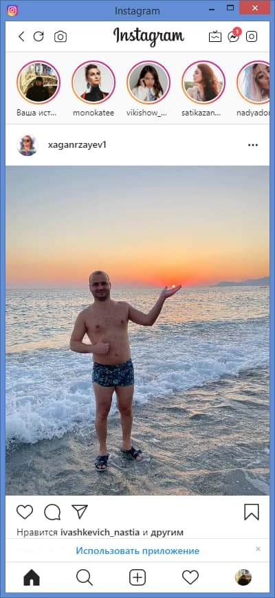

Це набір найкорисніших функцій для Instagram: прямі повідомлення, завантаження історій та IGTV, знімок екрана та багато іншого! Культовий макет мобільного Instagram є у вашому браузері! Просто натисніть кнопку та отримайте всі функції, як у мобільному додатку: - прямі повідомлення повністю підтримуються - завантажуйте власні відео IGTV з ПК - робіть скріншоти з вікна Instagram, щоб поділитися ними з друзями - зручне розташування для кращого досвіду Основна мета - зробити ваш соціальний досвід кращим та легшим. Одне клацання у вашому браузері переводить вас до популярної соціальної мережі, де ви можете ділитися фотографіями та відео, переглядати стрічку новин Instagram та спілкуватися з друзями. Прямі повідомлення повністю працюють, тож вам легше спілкуватися з близькими людьми. Функція знімка екрана також доступна в Інтернеті для Instagram.
Завантажити - ROSA linux